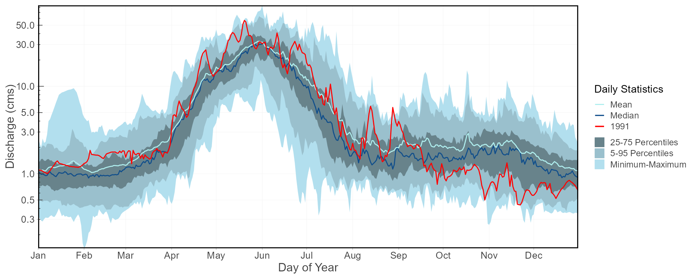

fasstr, the Flow Analysis Summary Statistics Tool for R,
is a set of R functions to
tidy, summarize, analyze, trend, and visualize streamflow data. This
package summarizes continuous daily mean streamflow data into various
daily, monthly, annual, and long-term statistics, completes trending and
frequency analyses, with outputs in both table and plot formats.
Features
This package provides functions for streamflow data analysis, including:
- data tidying (to prepare data for analyses;
add_*andfill_*functions), - data screening (to identify data range, outliers and missing data;
screen_*functions), - calculating summary statistics (long-term, annual, monthly and daily
statistics;
calc_*functions), - computing analyses (volume frequency analyses and annual trending;
compute_*functions), and, - visualizing data (plotting the various statistics;
plot_*functions).
Useful features of functions include:
- the integration of the
tidyhydatpackage to pull streamflow data from a Water Survey of Canada HYDAT database for analyses; - arguments for filtering of years and months in analyses and plotting;
- choosing the start month of your water year;
- selecting for rolling day averages (e.g. 7-day rolling average); and,
- choosing how missing dates are handled, amongst others.
This package is maintained by the Water Protection and Sustainability Branch of the British Columbia Ministry of Environment and Climate Change Strategy.
Installation
You can install fasstr directly from CRAN:
install.packages("fasstr")To install the development version from GitHub, use the remotes
package then the fasstr package:
if(!requireNamespace("remotes")) install.packages("remotes")
remotes::install_github("bcgov/fasstr")Several other packages will be installed with fasstr.
These include tidyhydat
for downloading Water Survey of Canada hydrometric data, zyp for
trending, ggplot2
for creating plots, and tidyr
and dplyr
for data wrangling and summarizing, amongst others.
To use the station_number argument and pull data
directly from a Water
Survey of Canada HYDAT database into fasstr functions,
download a HYDAT file using the following code:
tidyhydat::download_hydat()Using fasstr
There are several vignettes to provide more information on the usage
of fasstr functions and how to customize them with various
argument options.
- Get Started with fasstr
- fasstr Users Guide
- Computing an Annual Trends Analysis
- Computing a Volume Frequency Analysis
- Computing a Full fasstr Analysis
- fasstr Internal Workflows
Data Input
All functions in fasstr require a daily mean streamflow
data set from one or more hydrometric stations. Long-term and continuous
data sets are preferred for most analyses, but seasonal and partial data
can be used. Other daily time series data, like temperature,
precipitation or water levels, may also be used, but with certain
caution as some calculations/conversions are based on units of
streamflow (cubic metres per second). Data is provided to each function
using the either the data argument as a data frame of flow
values, or the station_number argument as a list of Water
Survey of Canada HYDAT station numbers.
When using the data option, a data frame of daily data
containing columns of dates (YYYY-MM-DD in date format), values (mean
daily discharge in cubic metres per second in numeric format), and,
optionally, grouping identifiers (character string of station names or
numbers) is called. By default the functions will look for columns
identified as ‘Date’, ‘Value’, and ‘STATION_NUMBER’, respectively, to be
compatible with the ‘tidyhydat’ defaults, but columns of different names
can be identified using the dates, values,
groups column arguments (ex.
values = Yield_mm). The following is an example of an
appropriate data frame (STATION_NUMBER not required):
## STATION_NUMBER Date Value
## 1 08NM116 1949-04-01 1.13
## 2 08NM116 1949-04-02 1.53
## 3 08NM116 1949-04-03 2.07
## 4 08NM116 1949-04-04 2.07
## 5 08NM116 1949-04-05 2.21
## 6 08NM116 1949-04-06 2.21Alternatively, you can directly pull a flow data set directly from a
HYDAT database (if installed) by providing a list of station numbers in
the station_number argument (ex.
station_number = "08NM116" or
station_number = c("08NM116", "08NM242")) while leaving the
data arguments blank. A data frame of daily streamflow data for all
stations listed will be extracted using tidyhydat and then
fasstr calculations will produce results of the
functions.
This package allows for multiple stations (or other groupings) to be
analyzed in many of the functions provided identifiers are provided
using the groups column argument (defaults to
STATION_NUMBER). If grouping column doesn’t exist or is improperly
named, then all values listed in the values column will be
summarized.
Function Types
Tidying
These functions, start with either add_* or
fill_*, add columns and rows, respectively, to streamflow
data frames to help set up your data for further analysis. Examples
include adding rolling means, adding date variables (WaterYear, Month,
DayofYear, etc.), adding basin areas, adding columns of volumetric
discharge and water yield, and filling dates with missing flow values
with NA.
Analysis
The analysis functions summarize your discharge values into various
statistics. screen_* functions summarize annual data for
outliers and missing dates. calc_* functions calculate
daily, monthly, annual, and long-term statistics (e.g. mean, median,
maximum, minimum, percentiles, amongst others) of daily, rolling days,
and cumulative flow data. compute_* functions also analyze
data but produce more in-depth analyses, like frequency and trending
analysis, and may produce multiple plots and tables as a result. All
tables are in tibble data frame formats. Can use
write_flow_data() or write_results() to
customize saving tibbles to a local drive.
Visualization
The visualization functions, which begin with plot_*,
plot the various summary statistics and analyses as a way to visualize
the data. While most plotting function statistics can be customized,
some come pre-set with statistics that cannot be changed. Plots can be
further modified by the user using the ggplot2 package and
its functions. All plots functions produce lists of plots (even if just
one produced). Can use write_plots() to customize saving
the lists of plots to a local drive (within folders or PDF
documents).
Function Options
Daily Rolling Means
If certain n-day rolling mean statistics are desired to be analyzed
(e.g. 3- or 7-day rolling means) some functions provide the ability to
select for that as function arguments
(e.g. rolling_days = 7 and
rolling_align = "right"). The rolling day align is the
placement of the date amongst the n-day means, where “right” averages
the day-of and previous n-1 days, “centre” date is in the middle of the
averages, and “left” averages the day-of and the following n-1 days. For
your own analyses you can add rolling means to your data set using the
add_rolling_means() function.
Year and Month Filtering
To customize your analyses for specific time periods, you can
designate the start and end years of your analysis using the
start_year and end_year arguments and remove
any unwanted years (for partial data sets for example) by listing them
in the excluded_years argument
(e.g. excluded_years = c(1990, 1992:1994)). Alternatively,
some functions have an argument called complete_years that
summarizes data from just those years which have complete flow records.
Some functions will also allow you to select the months of a year to
analyze, using the months argument, as opposed to all
months (if you want just summer low-flows, for example). Leaving these
arguments blank will result in the summary/analysis of all years and
months of the provided data set.
To group analyses by water, or hydrologic, years instead of calendar
years, if desired, you can set water_year_start within most
functions to another month than 1 (for January). A water year can be
defined as a 12-month period that comprises a complete hydrologic cycle
(wet seasons can typically cross calendar year), typically starting with
the month with minimum flows (the start of a new water recharge cycle).
If another start month is desired, you can choose it using the
water_year_start argument (numeric month). The water year
identifier is designated by the year it ends in (e.g. a water year from
Oct 1, 1999 to Sep 30, 2000 is designated as 2000). Start, end and
excluded years will be based on the specified water year.
For your own analyses, you can add date variables to your data set
using the add_date_variables() or
add_seasons() functions.
Drainage Basin Area
Water yield statistics (in millimetres) calculated in the some of the
functions require an upstream drainage basin area (in sq. km) using the
basin_area argument. If no basin areas are supplied, all
yield results will be NA. To apply a basin area (10 sqkm
for example) to all daily observations, set the argument as
basin_area = 10. If there are multiple stations or groups
to apply multiple basin areas (using the groups argument),
set them individually using this option:
basin_area = c("08NM116" = 795, "08NM242" = 22). If a
STATION_NUMBER column exists with HYDAT station numbers, the function
will automatically use the basin areas provided in HYDAT, if available,
so basin_area is not required. For your own analyses, you
can add basin areas to your data set using the
add_basin_area() function.
Handling Missing Dates
With the use of the ignore_missing argument in most
functions, you can decide how to handle dates with missing flow values
in calculations. When you set ignore_missing = TRUE a
statistic will be calculated for a given year, all years, or month
regardless of if there are missing flow values. When
ignore_missing = FALSE the returned value for the period
will be NA if there are missing values. To allow some
missing dates and still calculate statistics, some functions also
including the allowed_missing argument where you provide a
percentage (0 to 100) of missing days per time period.
Some functions have an argument called complete_years
which can be used, when set to TRUE, to filter out years
that have partial data sets (for seasonal or other reasons) and only
years with full data are used to calculate statistics.
Examples
Summary statistics example: long-term statistics
To determine the long-term summary statistics of daily data for each
month (mean, median, maximum, minimum, and some percentiles) you can use
the calc_longterm_daily_stats() function. If the ‘Mission
Creek near East Kelowna’ hydrometric station is of interest you can list
the station number in the station_number argument to obtain
the data (if tidyhydat and HYDAT are installed). Statistics
over several months can also be calculated, if of interest. See the
summer statistics (from July to September) in this example.
calc_longterm_daily_stats(station_number = "08NM116",
start_year = 1981,
end_year = 2010,
custom_months = 7:9,
custom_months_label = "Summer")## # A tibble: 14 × 8
## STATION_NUMBER Month Mean Median Maximum Minimum P10 P90
## <chr> <fct> <dbl> <dbl> <dbl> <dbl> <dbl> <dbl>
## 1 08NM116 Jan 1.22 1 9.5 0.160 0.540 1.85
## 2 08NM116 Feb 1.16 0.970 4.41 0.140 0.474 1.99
## 3 08NM116 Mar 1.85 1.40 9.86 0.380 0.705 3.80
## 4 08NM116 Apr 8.32 6.26 37.9 0.505 1.63 17.5
## 5 08NM116 May 23.6 20.8 74.4 3.83 9.33 41.2
## 6 08NM116 Jun 21.5 19.5 84.5 0.450 6.10 38.9
## 7 08NM116 Jul 6.48 3.90 54.5 0.332 1.02 15
## 8 08NM116 Aug 2.13 1.57 13.3 0.427 0.775 4.29
## 9 08NM116 Sep 2.19 1.58 14.6 0.364 0.735 4.35
## 10 08NM116 Oct 2.10 1.60 15.2 0.267 0.794 3.98
## 11 08NM116 Nov 2.04 1.73 11.7 0.260 0.560 3.90
## 12 08NM116 Dec 1.30 1.05 7.30 0.342 0.5 2.33
## 13 08NM116 Long-term 6.17 1.89 84.5 0.140 0.680 19.3
## 14 08NM116 Summer 3.61 1.98 54.5 0.332 0.799 7.64Plotting example: daily summary statistics
To visualize the daily streamflow patterns on an annual basis, the
plot_daily_stats() function will plot out various summary
statistics for each day of the year. Data can also be filtered for
certain years of interest (a 1981-2010 normals period for this example)
using the start_year and end_year arguments.
We can also compare individual years against the statistics using
add_year argument like below.
plot_daily_stats(station_number = "08NM116",
start_year = 1981,
end_year = 2010,
log_discharge = TRUE,
add_year = 1991)## $Daily_Statistics
Plotting example: flow duration curves
Flow duration curves can be produced using the
plot_flow_duration() function.
plot_flow_duration(station_number = "08NM116",
start_year = 1981,
end_year = 2010)## $Flow_Duration
Analysis example: low-flow frequency analysis
This package also provides a function,
compute_annual_frequencies(), to complete a volume
frequency analysis by fitting annual minimums or maximums to Log-Pearson
Type III or Weibull probability distributions. See the volume frequency
analyses documentation for more information. For this example, the 7-day
low-flow quantiles are calculated for the Mission Creek hydrometric
station using the Log-Pearson Type III distribution and method of
moments fitting method (both default). With this, several low-flow
indicators can be determined (i.e. 7Q5, 7Q10).
freq_results <- compute_annual_frequencies(station_number = "08NM116",
start_year = 1981,
end_year = 2010,
roll_days = 7,
fit_distr = "PIII",
fit_distr_method = "MOM")
freq_results$Freq_Fitted_Quantiles## # A tibble: 11 × 4
## Distribution Probability `Return Period` `7-Day`
## <chr> <dbl> <dbl> <dbl>
## 1 PIII 0.01 100 0.193
## 2 PIII 0.05 20 0.277
## 3 PIII 0.1 10 0.332
## 4 PIII 0.2 5 0.408
## 5 PIII 0.5 2 0.588
## 6 PIII 0.8 1.25 0.812
## 7 PIII 0.9 1.11 0.946
## 8 PIII 0.95 1.05 1.07
## 9 PIII 0.975 1.03 1.17
## 10 PIII 0.98 1.02 1.21
## 11 PIII 0.99 1.01 1.31The probability of observed extreme events can also be plotted (using selected plotting position) along with the computed quantiles curve for comparison.
freq_results <- compute_annual_frequencies(station_number = "08NM116",
start_year = 1981,
end_year = 2010,
roll_days = c(1,3,7,30))
freq_results$Freq_Plot